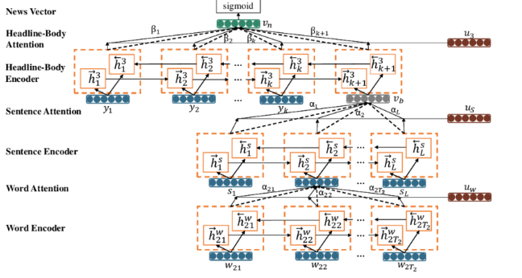

Detect Fake News and Bias jointly by Multi Task Learning
IRE Major Project
Approaches for understanding Hyperpartisan
We find relevant sources of information, assign each source credibility score & integrate them to confirm/debunk a given claim. Current approach is heavily dependent on tracking down the original source of news and scoring its credibility based on various factors.
A second approach examines the writing style of news article rather than its origin. The linguistic characteristics of a written piece can tell us a lot about it’s authors and their motives. For eg. specific words and phrases tend to occur more frequently in a deceptive text compared to one written honestly.
Fake news articles use more expressions that are common in hate speech, as well as words related to sex, death or anxiety. Genuine news, on the other hand, it contains the larger proportion of words related to work (business) and money (economy). So, dataset can be made by intentionally using repetitive words which aren’t frequently used.
Code Walkthrough Demo
Hierarchy as per understanding
Standard Boolean models
Vector Space models
BoW with tf-idf
Word embeddings with word2vec
Covolutional Networks
RNN , LSTM , GRU (deep learning)
Apply hierarchy (HAN)
3HAN
Baseline Approaches
Naive Bayes
In order to get a baseline accuracy rate for our data, we implemented a Naive Bayes classifier. Specifically, we used the scikit-learn implementation of Gaussian Naive Bayes. This is one of the simplest approaches to classification, in which a probabilistic approach is used.
SVM
We use the Radial Basis Function kernel in our project. The reason we use this kernel is that two feature vectors will be close to each other if their corresponding documents are similar, so the distance computed by the kernel function should still represent the original distance.
LSTMs
LSTMs with dropout regularization layers between
the word embedding layer and the LSTM layer is
adopted to avoid over-fitting to the training dataset.
3HAN
Three level hierarchical attention network (3HAN) which creates
an effective representation of a news article called news vector. A news vector
can be used to classify an article by assigning a probability of being fake.

3 HAN Architecture
We define a news vector as a
projection of a news article into a vector representation suitable for effective classification of articles.A news vector is constructed using 3HAN. To capture the body hierarchy and interactions between parts when forming the news vector,3HAN uses the following layers: Word sequence encoder, Word level attention (Layer 1) Sentence encoder, Sentence level attention (Layer 2) Headline-body encoder,Headline-body level attention (Layer 3).
Optimizations / Modifications tried in Model
3HAN-Max: Vectors are composed using global max pooling
3HAN-Ave: Vectors are composed using global average pooling
3HAN+PT: Variant of 3HAN to include pre-training